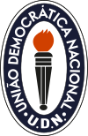
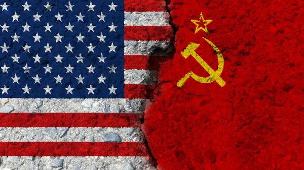
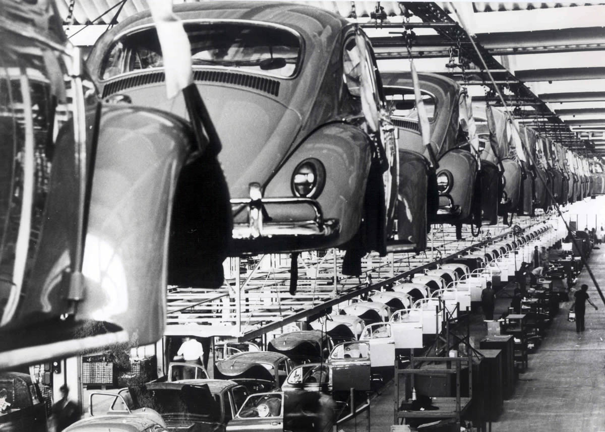
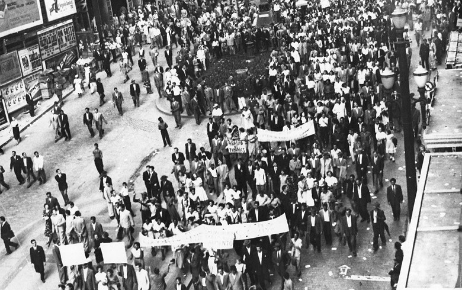
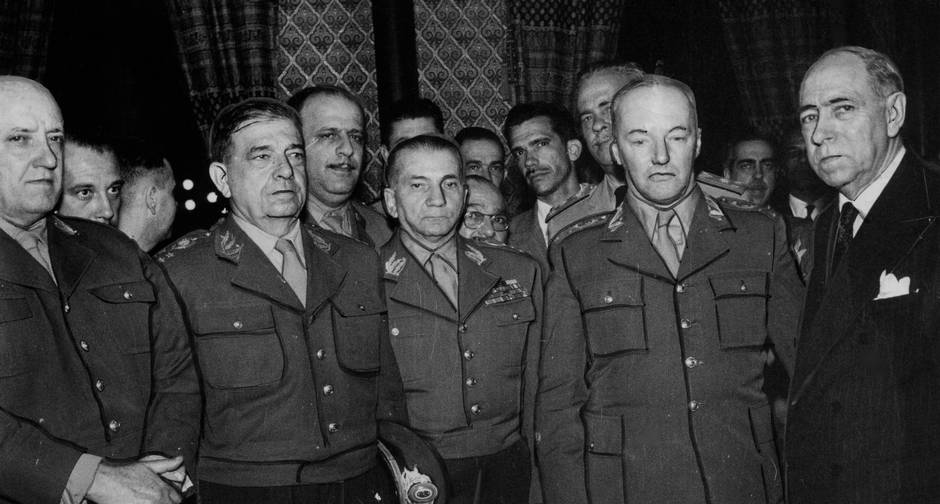
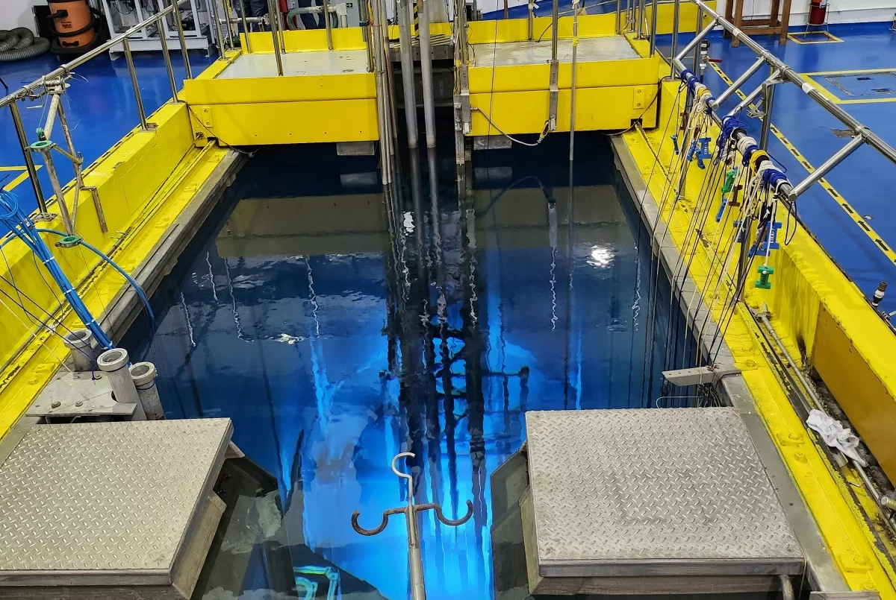

Década de 40
O Brasil na Segunda Guerra Mundial
O primeiro escalão da FEB chegou ao porto de NÁPOLES, no dia 16 de julho de 1944, marcando o início da presença brasileira em terras italianas e se juntou aos exércitos dos Aliados da Segunda Guerra Mundial. As primeiras semanas foram ocupadas se aclimatando ao local, assim como recebendo o mínimo equipamento e treinamento necessário, sob a supervisão do comando americano, ao qual a FEB estava subordinada, já que a preparação no BRASIL demonstrou ser deficiente, devido à falta de material de instrução, apesar dos quase dois anos de intervalo entre a declaração de guerra e o envio das primeiras tropas à frente de combate
Veja mais sobre a participação do Brasil na Segunda Guerra:

Início da Quarta República
Entre 1946 e 1947, o Brasil vivenciou um período de intensa transformação política e social. Essa fase crucial foi marcada pelo estabelecimento de novos quadros na política brasileira, influenciados por eventos e atores-chave.
Em 1945, Getúlio Vargas decretou o Ato Adicional, um marco importante na transição do regime autoritário do Estado Novo para uma democracia mais representativa. O Ato Adicional instituiu eleições diretas para a presidência, marcando o fim do governo de Vargas nesse período.
Um elemento significativo nessa época foi a formação da União Democrática Nacional (UDN), um partido que representava forças conservadoras e que desempenhou um papel relevante na oposição a Getúlio Vargas e no cenário político brasileiro.
Além disso, dois partidos surgiram como atores-chave nesse período: o Partido Social Democrático (PSD) e o Partido Trabalhista Brasileiro (PTB). O PSD, liderado por figuras como Eurico Gaspar Dutra, representava uma corrente mais centrista e contava com o apoio das elites econômicas. O PTB, por outro lado, era associado ao trabalhismo e tinha Getúlio Vargas como uma figura proeminente, atraindo os trabalhadores e as classes populares.
Esses partidos desempenharam um papel crucial nas eleições presidenciais de 1945, que levaram à vitória de Eurico Gaspar Dutra, e na elaboração da nova Constituição de 1946, que estabeleceu princípios democráticos e direitos fundamentais.
Esse período de transição política no Brasil foi fundamental para a consolidação da democracia no país e a definição de novos rumos na política brasileira, com a participação ativa de diferentes atores e ideologias.
Fechamento do Partido Comunista
Além das informações anteriores, é importante destacar que 1947 foi marcado por eventos significativos no contexto das relações internacionais do Brasil. Em maio de 1947, o governo brasileiro decretou o fechamento do Partido Comunista Brasileiro (PCB), uma ação que refletia a crescente polarização ideológica durante esse período de transição política. Isso ocorreu no contexto da Guerra Fria, em que os EUA pressionavam diversos países a adotarem medidas anti-comunistas.
Outro evento relevante foi o rompimento das relações diplomáticas entre o Brasil e a União Soviética em outubro de 1947. Esse rompimento se deu em resposta à pressão dos Estados Unidos e refletiu a adesão do Brasil à política externa norte-americana de contenção do comunismo. O Brasil alinhou-se, assim, com o bloco ocidental na Guerra Fria.
Esses eventos desempenharam um papel importante na orientação ideológica da política externa brasileira e na forma como o Brasil se posicionou em relação ao conflito global entre os Estados Unidos e a União Soviética. Eles também contribuíram para a atmosfera política de intensa polarização que marcou essa época de transformação política no Brasil
Década de 50
Os Anos Dourados
A década de 1950 é marcada, em seu início, pela volta de Getúlio Vargas à Presidência e, dois anos depois, por seu suicídio. Em Minas Gerais, Juscelino Kubitschek era governador e, na segunda metade da década, tornou-se o presidente que construiu Brasília (DF). Os Anos de 1950 ficaram conhecidos como os “Anos Dourados”. É uma década de revoluções tecnológicas com evidentes implicações sociais. Nesta época teve início a chegada da televisão em Portugal e no Brasil. Esta época também foi considerada a "idade de ouro" do cinema e também foi a época de importantes descobertas científicas como o ADN
O segundo governos de vargas, que teve como grandes marcas a permanente crise política e a tensão social causada pela crise política e econômica do país. em 19 de janeiro Inaugurada pelo presidente Brasileiro Eurico Gaspar Dutra a Rodovia Presidente Dutra ligando São Paulo e Rio de Janeiro. Em 20 de janeiro Inaugurada a estação de televisão TV Tupi Rio de Janeiro
Em 18 de março de 1953, cerca de 60 mil trabalhadores realizaram protestos nas ruas de sao paulo. Esse protesto ficou conhecido como Marcha das Panelas Vazias e tinha como objetivo exigir um aumento de salário para os trabalhadores
O ano seguinte foi um dos mais conturbados da história republicana brasileira. Em fevereiro, 82 coronéis apoiadores pelo então ministro da guerra, general ciro do espirito santo cardoso, divulgaram manifesto criticando as greves dos trabalhadores e custo da vida. O ano ficou marcado pelo fim do governo de getulio vargas com o seu suicidio em 24 de agosto
Juscelino Kubitschek e seu governo
O Golpe Preventivo de 1955 também é conhecido como Movimento 11 de Novembro e ficou caracterizado por ser um autogolpe realizado por Henrique Teixeira Lott com o objetivo de garantir a legalidade e a posse de Juscelino Kubitschek, supostamente ameaçada por um golpe político que estaria sendo organizado pela UDN
É formada a aliança PSD-PTB, com João Goulart como vice de JK, para concorrer a Eleição presidencial deste ano. O PCB publica um Manifesto Eleitoral apoiando a chapa JK-Jango, aumentando as tensões políticas.
Movimento de 11 de Novembro: O general Henrique Lott com apoio do comandante do I Exército, Odílio Denys, avança com as tropas militares sobre o Rio de Janeiro. Ao saberem da movimentação das forças militares, Carlos Luz foge a bordo do Cruzador Tamandaré, acompanhado de Carlos Lacerda e do coronel Mamede. O Congresso brasileiro, sob pressão da ocupação militar, vota pelo impeachment de Carlos Luz, por ter deixado o território brasileiro sem autorização. O Presidente do Senado, Nereu Ramos, torna-se interinamente o 20º Presidente do Brasil.Sem o apoio esperado dos militares e aliados políticos, Carlos Luz retorna à Capital e renuncia a Presidência da Câmara. Carlos Lacerda solicita asilo à embaixada de Cuba, para onde parte depois de receber um salvo-conduto
O Presidente interino Nereu Ramos, com autorização do Congresso nacional, decreta Estado de Sítio, até que os candidatos eleitos possam tomar posse
Devido os incidentes durante a viagem do vice-presidente americano Richard Nixon pela América do Sul, JK troca cartas com o Presidente americano Dwight D. Eisenhower dando início a criação da Operação Pan-americana.
A construção de Brasília
Primeiro Reator Nuclear
Em 25 de janeiro de 1958 o então presidente Juscelino Kubitschek inaugurava oficialmente o primeiro reator nuclear do país – e também da América Latina.O complexo, que recebeu o nome de IEA-R1, estava em operação desde 16 de setembro do ano anterior. Foi construído com a ajuda do governo norte-americano, dentro do programa Atoms for Peace (algo como Átomos Pela Paz), que estimulava países a aderirem à tecnologia nuclear.
Ao contrário de usinas de energia nuclear, como as de Angra, desde que foi inaugurado o reator não tem o objetivo de gerar energia. Seu maquinário é utilizado para pesquisas na área de radioatividade e para a fabricação de produtos médicos.
Migração Nordestina
Durante o processo de industrilização, criou-se uma porta de oportunidades para diversas pessoas, dentre elas os nordestinos, que enfrentavam diversos problemas, como o abandono político, secas e pobreza na região onde viviam.
Veja mais sobre a migração nordestina:
Então é isso! Espero que você tenha gostado do nosso artigo a respeito da história do Brasil.